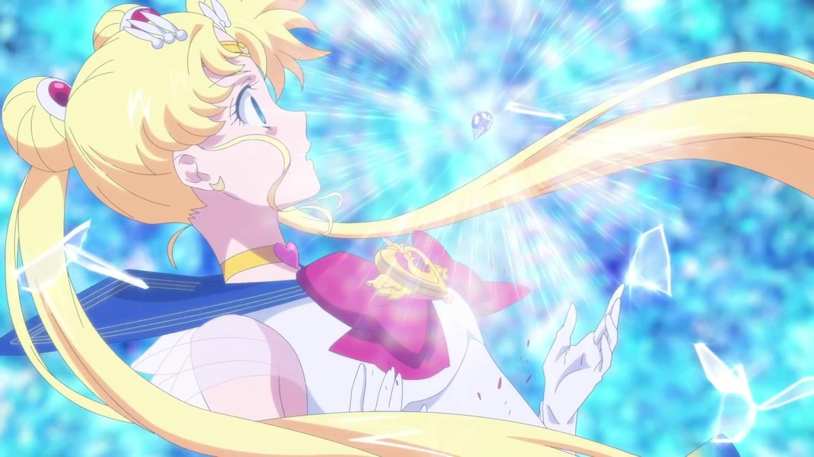
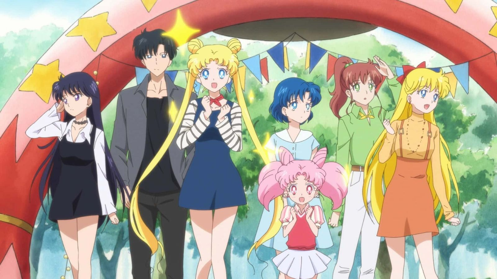
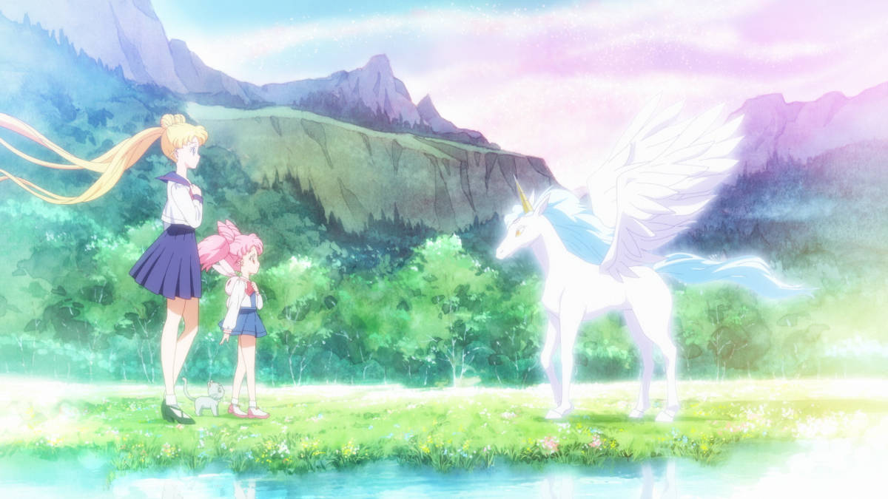

Рецензия
Маленькие женщины и война бесконечности: рецензия на аниме «Красавица-воин Вечная Сейлор Мун»
Воительницы в матросках несут возмездие во имя Луны теперь на Netflix.
Настасья ГорбачевскаяВоссоединения, возвращения, продолжения — ностальгическая машина поп-культуры вернула ещё один из главных трофеев 90-х на экраны (пусть для нас и на малые): на Netflix вышел двухсерийный полнометражный фильм «Красавица-воин Вечная Сейлор Мун». Это продолжение реинкарнации аниме 2014 года — «родительская» студия Toei перезапустила мангу Наоко Такуэти, но, вероятнее всего, это событие застали лишь преданные поклонники франшизы. Netflix же заставляет вернуться к храбрым воительницам даже туристов во вселенной — хотя бы из сентиментальных побуждений. Мы решили, что будет справедливым поделиться мнением о новом полнометражном аниме сразу из двух лагерей — ниже две рецензии: от страстной фанатки со стажем и ностальгирующей гастролёрши в волшебном мире.

Добро пожаловать в цирк Мёртвой Луны!
Даже если вы с трудом можете вспомнить, что Мамору, Такседо Маск и принц Эндимион — это разные ипостаси одного и того же персонажа, и не понимаете, почему Чибиусе надо вернуться назад в будущее, откуда она когда-то прибыла, это, скорее всего, никак не повлияет на восприятие в целом. Авторы заботливо и последовательно объясняют всё, что нужно объяснить: от фундаментальных законов вселенной до крохотных деталей, характеров персонажей и родственных связей (да, малышка — дочка Усаги и Мамору). Школьницам-воительницам предстоит собраться вместе вновь, чтобы защитить свои заветные мечты от посягательств артистов цирка Мёртвой Луны — те (как обычно) стремятся захватить мир, и только девочки в матросках могут остановить вторжение. Но полное солнечное затмение привело на Землю гостей и поприятнее: говорящий Пегас (впрочем, похож он скорее на единорога) Гелиос сообщает Чибиусе, что наконец отыскал деву (что бы это ни значило).

И повторится всё, как встарь: точь-в-точь по тропам мультсериала
«Красавица-воин Вечная Сейлор Мун» официально вышла на Netflix по всему миру в четверг, 3 июня. В кинотеатральном окне в Японии релиз был разделен на две части и выходил в разные даты. Стриминг же объединил их в двухсерийный полнометражный фильм.
Фильм сразу же влюбляет тем, насколько обескураживающе откровенно показывает главные страхи и неуверенность героинь в себе; кроме того, зритель отправляется на свидание с переживанием каждой из них, и вместо «массовки», поддерживающей центральную фигуру Усаги, Сейлоры становятся самостоятельными и равнозначными воительницами отряда света. Есть в этом во всём и психотерапевтическая подоплёка — своего рода напутствие юным (или юным душой) зрительницам о необходимости прислушиваться к своему внутреннему «я», в котором и обретается настоящая сила.
